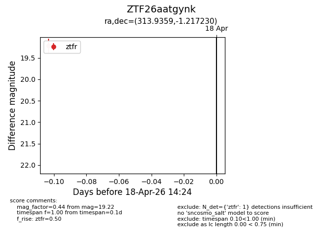
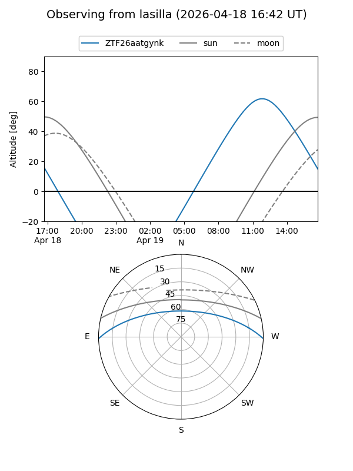
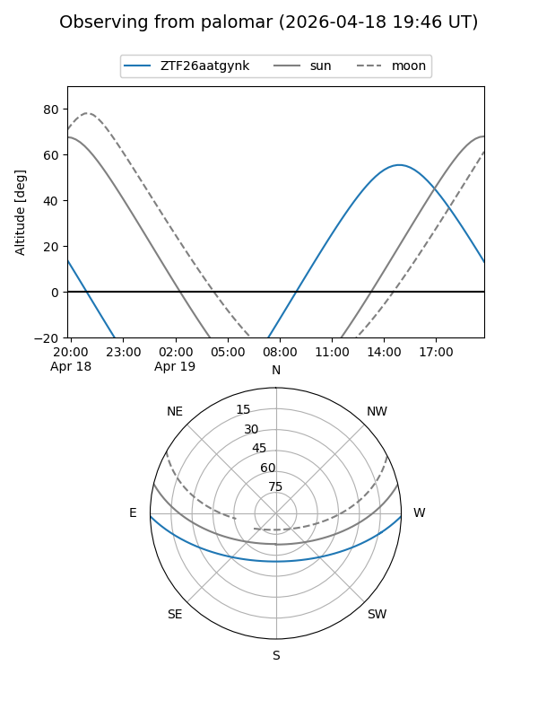

ZTF26aatgynk
Target ZTF26aatgynk at 2026-04-18 14:30
Aliases and brokers:
FINK: link
Lasair: link
ALeRCE: link
alt names
ZTF26aatgynk (ztf,fink_ztf)
Coordinates:
equatorial (ra, dec) = 313.9359,-1.21723
equatorial (HMS+DMS) = 20:55:44.62,-01:13:02.03
galactic (l, b) = (47.1154,-27.96797)
Flags:
Photometry:
last ztfr=19.22
1 ztfr detections
Lightcurve

Visibility


Additional plots